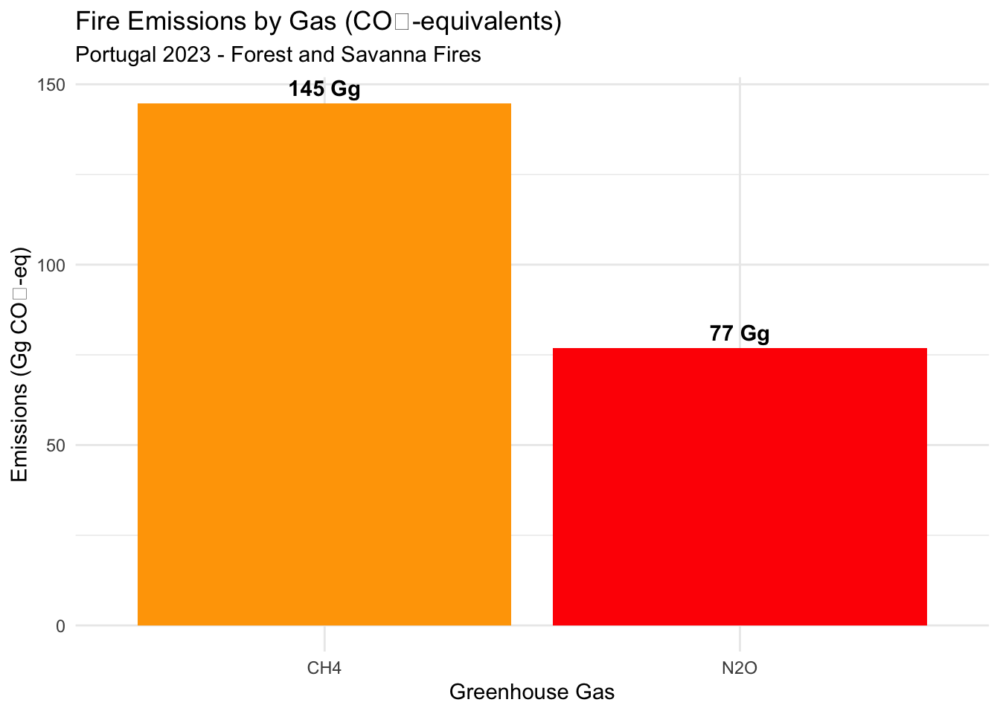
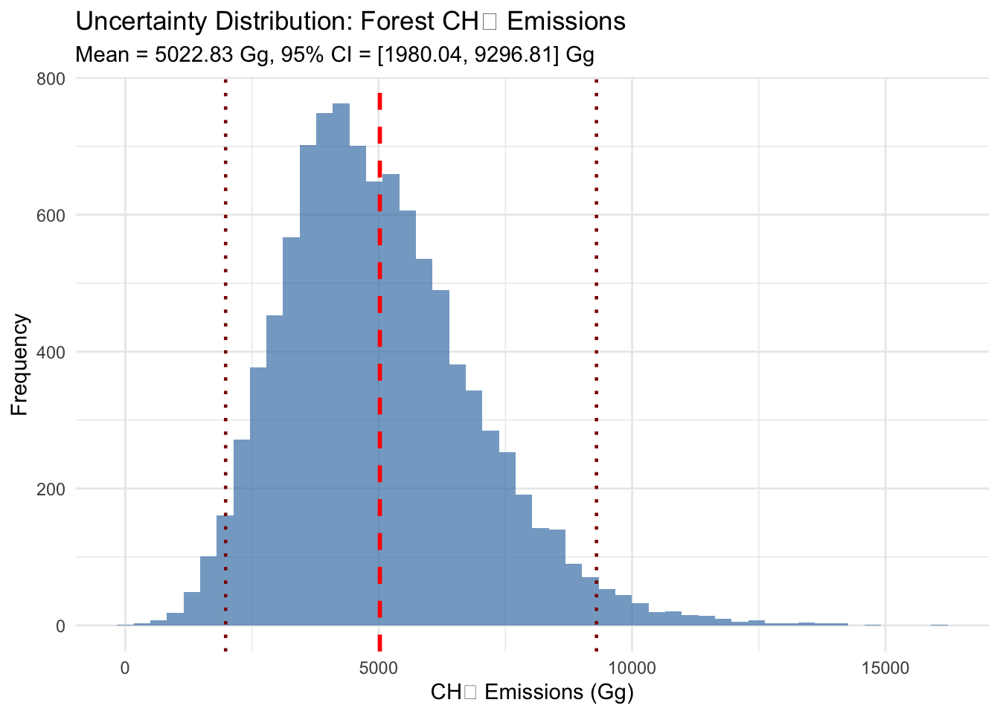

easypackages::packages(
"bslib",
"cols4all", "covr", "cowplot",
"dendextend", "digest","DiagrammeR","dtwclust", "downlit",
"e1071", "exactextractr","elevatr",
"FNN", "future", "forestdata",
"gdalcubes", "gdalUtilities", "geojsonsf", "geos", "ggplot2", "ggstats",
"ggspatial", "ggmap", "ggplotify", "ggpubr", "ggrepel", "giscoR",
"hdf5r", "httr", "httr2", "htmltools",
"jsonlite",
"kohonen",
"leaflet.providers", "leafem", "libgeos","luz","lwgeom", "leaflet", "leafgl",
"mapedit", "mapview", "maptiles", "methods", "mgcv",
"ncdf4", "nnet",
"openxlsx", "parallel", "plotly",
"randomForest", "rasterVis", "raster", "Rcpp", "RcppArmadillo",
"RcppCensSpatial","rayshader", "RcppEigen", "RcppParallel",
"RColorBrewer", "reactable", "rgl", "rsconnect","RStoolbox", "rts",
"s2", "sf", "scales", "sits","spdep", "stars", "stringr","supercells",
"terra", "testthat", "tidyverse", "tidyterra","tools",
"tmap", "tmaptools", "terrainr",
"xgboost",
prompt = F)
#mapviewOptions(fgb = FALSE)
sf::sf_use_s2(use_s2 = FALSE)4 Emission Factors
Overview
This chapter describes the application of IPCC default emission factors (Gef) to calculate greenhouse gas emissions from biomass burning. The methodology converts fuel consumption estimates (from Chapter 3) into emissions of carbon dioxide (CO2), methane (CH4), and nitrous oxide (N2O), following IPCC Tier 1 reporting requirements.
Environment Setup
4.1 IPCC Emission Factors
4.1.1 Completing Equation 2.27
Emission factors represent the final component of the IPCC fire emissions equation:
\[ L_{fire} = A \times M_B \times C_f \times G_{ef} \times 10^{-3} \]
Where:
- Gef = Emission factor (g gas per kg dry matter burned)
- Lfire = Total emissions (tonnes of gas)
- 10⁻³ = Unit conversion factor (g to kg, kg to tonnes)
Expanded form: \[ L_{fire} \text{ (tonnes)} = \text{Area (ha)} \times \frac{\text{Biomass (t DM)}}{\text{ha}} \times \frac{\text{g gas}}{\text{kg DM}} \times 10^{-3} \]
4.1.2 IPCC Emission Factor Tables
Key IPCC sources:
- Table 2.5: Emission factors for fires in forests and other vegetation types
- Table 2.6: Emission factors for fires in organic soils (Wetlands Supplement)
- Table 5.6: CO₂ emission factors for carbon stock changes (forests only)
4.1.3 IPCC Default Emission Factors - Quick Reference
Forest Fires (IPCC 2019 Table 2.5):
| Forest Type | CH₄ (g kg⁻¹) | N₂O (g kg⁻¹) | CO (g kg⁻¹)* | NOx (g kg⁻¹)* |
|---|---|---|---|---|
| Tropical Forest | 6.8 ± 2.0 | 0.20 ± 0.10 | 93 ± 38 | 3.9 ± 2.4 |
| Temperate Forest | 4.7 ± 1.9 | 0.26 ± 0.15 | 107 ± 37 | 3.0 ± 1.4 |
| Boreal Forest | 4.7 ± 1.9 | 0.26 ± 0.15 | 107 ± 37 | 3.0 ± 1.4 |
*Optional gases for Tier 1
Savanna Fires (IPCC 2019 Table 2.5):
| Vegetation Type | CH₄ (g kg⁻¹) | N₂O (g kg⁻¹) | CO (g kg⁻¹)* | NOx (g kg⁻¹)* |
|---|---|---|---|---|
| Savanna/Grassland | 2.3 ± 0.9 | 0.21 ± 0.10 | 65 ± 20 | 3.9 ± 2.4 |
Organic Soil Fires (IPCC 2014 Wetlands Supplement Table 2.6):
| Soil Type | CO₂ (g kg⁻¹) | CH₄ (g kg⁻¹) | N₂O (g kg⁻¹) |
|---|---|---|---|
| Tropical Peatland | 1703 ± 8 | 5.7 ± 5.4 | Not estimated |
Note: CO₂ emission factor = 1703 g kg⁻¹ ≈ 1.7 kg CO₂ per kg peat burned
4.2 Methane (CH₄) Emissions
4.2.1 CH₄ Emission Mechanisms
Formation process: Incomplete combustion under oxygen-limited conditions
\[ \text{Biomass} \xrightarrow{\text{Incomplete combustion}} \text{CH}_4 + \text{CO}_2 + \text{CO} + \text{char} \]
Key factors affecting CH₄ emissions:
- Fire intensity:
- Low-intensity fires = More smoldering = Higher CH₄
- High-intensity fires = More flaming = Lower CH₄
- Fuel moisture:
- Wet fuels = Lower combustion temperature = Higher CH₄
- Dry fuels = Higher temperature = Lower CH₄
- Fuel type:
- Forest: High CH₄ (dense, moist fuels)
- Savanna: Low CH₄ (grass cures completely)
- Combustion phase:
- Flaming: Minimal CH₄ (>90% CO₂)
- Smoldering: High CH₄ (20-40% of carbon as CH₄)
4.2.2 Forest CH₄ Emissions
4.2.2.1 Emission Factors by Forest Type
Tropical Forests (6.8 g CH₄ kg⁻¹):
- Highest emission factors
- Dense canopy >> poor ventilation
- High fuel moisture >> low combustion efficiency
- Long smoldering phase (especially coarse woody debris)
Temperate/Boreal Forests (4.7 g CH₄ kg⁻¹):
- Moderate emission factors
- More complete combustion in conifers
- Resinous fuels burn hotter
- Less smoldering than tropical
Uncertainty: ±30-40% (IPCC Table 2.5)
4.2.2.2 Calculation Example
Portugal Temperate Forest Fires (2023):
Given:
- Biomass burned: 1,072 Gg DM (from Chapter 3)
- Emission factor: 4.7 g CH₄ kg⁻¹ DM
Calculation: \[ \begin{aligned} L_{CH_4} &= \text{Biomass} \times G_{ef} \times 10^{-3} \\ &= 1,072,000 \text{ t DM} \times 4.7 \text{ g kg}^{-1} \times 10^{-3} \\ &= 1,072,000 \times 1000 \text{ kg} \times 4.7 \text{ g kg}^{-1} \times 10^{-3} \text{ t g}^{-1} \\ &= 5,038 \text{ tonnes CH}_4 \\ &= 5.04 \text{ Gg CH}_4 \end{aligned} \]
library(tidyverse)
# Input data (from Chapter 3)
forest_data <- data.frame(
country = "Portugal",
year = 2023,
fire_category = "Forest",
vegetation_type = "Other_Forest",
climate_zone = "Temperate",
biomass_burned_Gg = 1.072 # Gigagrams (1000 tonnes)
)
# IPCC emission factor
EF_CH4_temperate_forest <- 4.7 # g kg⁻¹
# Calculate CH₄ emissions
forest_ch4 <- forest_data %>%
mutate(
# Convert Gg to kg: 1 Gg = 10^9 g = 10^6 kg
biomass_kg = biomass_burned_Gg * 1e6,
# Calculate emissions: kg × (g kg⁻¹) × 10⁻³ (g to kg) = kg CH₄
CH4_kg = biomass_kg * EF_CH4_temperate_forest / 1000,
# Convert to Gg: kg / 10^6 = Gg
CH4_Gg = CH4_kg / 1e6,
# Alternative direct calculation
CH4_Gg_direct = biomass_burned_Gg * EF_CH4_temperate_forest
)
print(forest_ch4$CH4_Gg)
NA [1] 0.00504
# Result: 5.04 Gg CH₄4.2.3 Savanna CH₄ Emissions
4.2.3.1 Lower Emission Factors
Savanna/Grassland (2.3 g CH₄ kg⁻¹):
- Lowest emission factors among all vegetation types
- Grass fuels cure completely (low moisture)
- Predominantly flaming combustion
- Minimal smoldering phase - High combustion efficiency
Why savanna CH₄ < forest CH₄:
1. Fuel moisture: 5-10% (savanna) vs. 30-60% (forest)
2. Fuel bed depth: 10-30 cm (savanna) vs. 1-10 m (forest)
3. Combustion mode: 80% flaming (savanna) vs. 40% flaming (forest)
4.2.3.2 Calculation Example
Portugal Savanna Fires (2023):
Given:
- Biomass burned: 57 Gg DM
- Emission factor: 2.3 g CH₄ kg⁻¹
Calculation: \[ L_{CH_4} = 57 \text{ Gg DM} \times 2.3 \text{ g kg}^{-1} = 131 \text{ Mg CH}_4 = 0.13 \text{ Gg CH}_4 \]
# Input data
savanna_data <- data.frame(
country = "Portugal",
year = 2023,
fire_category = "Savanna",
vegetation_type = "Grassland",
biomass_burned_Gg = 0.057
)
# IPCC emission factor
EF_CH4_savanna <- 2.3 # g kg⁻¹
# Calculate CH₄ emissions
savanna_ch4 <- savanna_data %>%
mutate(
CH4_Gg = biomass_burned_Gg * EF_CH4_savanna
)
print(savanna_ch4$CH4_Gg)
NA [1] 0.131
# Result: 0.13 Gg CH₄4.2.4 Organic Soil CH₄ Emissions
Tropical Peatland (5.7 g CH₄ kg⁻¹):
- Intermediate emission factors
- Smoldering combustion dominates
- Can burn underground for months
- High variability (CV ~95%)
Southeast Asia only (per FAOSTAT):
# Example: Indonesia peat fires
indonesia_peat <- data.frame(
country = "Indonesia",
year = 2023,
fire_category = "Organic_Soil",
biomass_burned_Gg = 125 # Example
)
EF_CH4_peat <- 5.7 # g kg⁻¹
indonesia_ch4 <- indonesia_peat %>%
mutate(CH4_Gg = biomass_burned_Gg * EF_CH4_peat)
print(indonesia_ch4$CH4_Gg)
NA [1] 712
# Result: 712 Gg CH₄ (if 125 Gg biomass burned)4.3 Nitrous Oxide (N2O) Emissions
4.3.1 N2O Emission Mechanisms
Formation process: Incomplete oxidation of nitrogen in biomass
\[ \text{Biomass-N} \xrightarrow{\text{Combustion}} \text{N}_2\text{O} + \text{NO}_x + \text{N}_2 + \text{NH}_3 \]
Key factors:
- Nitrogen content of fuel:
- Legumes: High N >> High N₂O
- Conifers: Low N >> Low N₂O
- Grasses: Variable N (fertilization-dependent)
- Combustion temperature:
- Low temp (400-600°C): High N₂O/NOx ratio
- High temp (>800°C): Low N₂O (converts to N₂)
- Fuel moisture:
- Affects temperature = Affects N₂O production
- Fire residency time:
- Long smoldering = More N₂O
4.3.2 Forest N₂O Emissions
4.3.2.1 Emission Factors by Forest Type
Temperate/Boreal Forests (0.26 g N₂O kg⁻¹):
- Moderate emission factors
- Conifer needles: Low N content (~0.5%)
- Moderate combustion temperatures
Tropical Forests (0.20 g N₂O kg⁻¹):
- Lower emission factors (surprising given high N content)
- Explanation: High temperature flaming combustion
- More N₂ produced instead of N₂O
Uncertainty: ±50-60% (highest among all emission factors)
4.3.2.2 Calculation Example
Portugal Temperate Forest Fires (2023):
# Input data
forest_data <- data.frame(
country = "Portugal",
year = 2023,
fire_category = "Forest",
biomass_burned_Gg = 1.072
)
# IPCC emission factor
EF_N2O_temperate_forest <- 0.26 # g kg⁻¹
# Calculate N₂O emissions
forest_n2o <- forest_data %>%
mutate(
N2O_Gg = biomass_burned_Gg * EF_N2O_temperate_forest
)
print(forest_n2o$N2O_Gg)
NA [1] 0.279
# Result: 0.28 Gg N₂O (280 tonnes)4.3.3 Savanna N₂O Emissions
Savanna/Grassland (0.21 g N₂O kg⁻¹):
- Similar to forest emission factors
- Nitrogen variability depends on:
- Grazing intensity (manure inputs)
- Proximity to croplands (fertilizer drift)
- Legume abundance
# Input data
savanna_data <- data.frame(
country = "Portugal",
year = 2023,
fire_category = "Savanna",
biomass_burned_Gg = 0.057
)
# IPCC emission factor
EF_N2O_savanna <- 0.21 # g kg⁻¹
# Calculate N₂O emissions
savanna_n2o <- savanna_data %>%
mutate(
N2O_Gg = biomass_burned_Gg * EF_N2O_savanna
)
print(savanna_n2o$N2O_Gg)
NA [1] 0.012
# Result: 0.012 Gg N₂O (12 tonnes)4.3.4 Organic Soil N₂O Emissions
NOT ESTIMATED for organic soil fires (IPCC 2014 Wetlands Supplement):
“Due to lack of data, no default N₂O emission factor is provided for fires in organic soils.”
Rationale:
- Very few measurements available
- Peat nitrogen content highly variable
- Smoldering combustion >> complex N chemistry
- Most N released as N₂ or NH₃ rather than N₂O
FAOSTAT approach: N₂O = 0 for organic soil fires
4.4 Carbon Dioxide (CO₂) Emissions
4.4.1 CO₂ Reporting Logic
IPCC Tier 1 Rule:
| Fire Category | CO₂ Reported | Rationale |
|---|---|---|
| Forest Fires | ❌ | Captured in carbon stock changes (Chapter 4.2, Forest Land) |
| Savanna Fires | ❌ | Assumed balanced by annual regrowth |
| Organic Soil Fires | ✅ | Permanent carbon loss (peat does not regrow in <20 years) |
4.4.2 Forest/Savanna CO₂ Treatment
Why CO₂ is excluded:
Carbon neutrality assumption (short-term): \[ \text{CO}_2\text{(fire)} = \text{CO}_2\text{(regrowth)} \quad \text{over 1-20 years} \]
Accounting framework:
- CO₂ from fire = immediate emission
- CO₂ sequestered by regrowth = gradual removal
- Net change reported in carbon stock change category, not fire emissions
IPCC methodology (2006 Guidelines, Vol. 4, Ch. 2):
- Fire emissions reported: Non-CO₂ only (CH₄, N₂O)
- Carbon stock changes reported: All carbon fluxes including fire impacts
Exception: If fire causes permanent land-use change (e.g., deforestation), CO₂ reported under Land Use Change, not fire emissions.
4.4.3 Organic Soil CO₂ Emissions
4.4.3.1 Why Organic Soil CO₂ is Different
Peat = Non-renewable carbon source:
- Peat accumulation: 0.1-1.0 mm year⁻¹
- Fire consumption: 100-500 mm per event
- Recovery time: 100-5,000 years
- Conclusion: Fire CO₂ NOT balanced by regrowth
IPCC Wetlands Supplement: > “Emissions of CO₂ from peat fires should be estimated separately from other fire types, as the carbon in peat has accumulated over centuries to millennia and is not rapidly replaced by regrowth.”
4.4.3.2 Emission Factor
Tropical Peatland (1703 g CO₂ kg⁻¹): \[ \begin{aligned} \text{Carbon content of peat} &= 0.50 \text{ kg C per kg DM} \\ \text{Molecular weight ratio} &= \frac{44 \text{ (CO}_2)}{12 \text{ (C)}} = 3.67 \\ G_{ef,CO_2} &= 0.50 \times 3.67 \times 1000 \text{ g kg}^{-1} \\ &= 1835 \text{ g CO}_2 \text{ kg}^{-1} \text{ DM} \end{aligned} \]
IPCC default: 1703 g kg⁻¹ (slightly lower, accounting for incomplete carbon conversion)
Uncertainty: Very low (±8 g kg⁻¹) — CO₂/C ratio is stoichiometric
4.4.3.3 Calculation Example
Indonesia Peat Fires:
# Input data
indonesia_peat <- data.frame(
country = "Indonesia",
year = 2023,
fire_category = "Organic_Soil",
biomass_burned_Gg = 125 # Example value
)
# IPCC emission factor
EF_CO2_peat <- 1703 # g kg⁻¹
# Calculate CO₂ emissions
peat_co2 <- indonesia_peat %>%
mutate(
CO2_Gg = biomass_burned_Gg * EF_CO2_peat
)
print(peat_co2$CO2_Gg)
# Result: 212,875 Gg CO₂ (212.9 Tg CO₂)
# This is MASSIVE compared to non-CO₂ emissions
# Example: 2015 Indonesia fires released ~1.75 Gt CO₂ equivalent4.5 Reproducible Workflow
4.5.1 Consolidated Script
# IPCC Tier 1 Fire Emissions Script
# ============================================================
library(tidyverse)
# 1. Load IPCC Emission Factors
emission_factors <- tribble(
~fire_category, ~climate_zone, ~gas, ~EF_g_kg, ~uncertainty_pct,
# Forest Fires
"Forest", "Tropical", "CH4", 6.8, 30,
"Forest", "Tropical", "N2O", 0.20, 50,
"Forest", "Temperate", "CH4", 4.7, 40,
"Forest", "Temperate", "N2O", 0.26, 60,
"Forest", "Boreal", "CH4", 4.7, 40,
"Forest", "Boreal", "N2O", 0.26, 60,
# Savanna Fires
"Savanna", "All", "CH4", 2.3, 40,
"Savanna", "All", "N2O", 0.21, 50,
# Organic Soil Fires
"Organic_Soil", "Tropical", "CO2", 1703, 0.5,
"Organic_Soil", "Tropical", "CH4", 5.7, 95
)
# 2. Load Fueld Consumption Data (Ch.3)
fuel_consumption <- read.csv("Portugal_FuelConsumption_2023.csv")
# Data structure of dunmmy CSV:
# country | year | fire_category | vegetation_type | climate_zone | area_ha | biomass_burned_Gg
# 3. Calculate Emissions by Gas
emissions <- fuel_consumption %>%
# Join with emission factors
left_join(
emission_factors,
by = c("fire_category", "climate_zone")
) %>%
# Calculate emissions for each gas
mutate(
emissions_Gg = biomass_burned_Gg * EF_g_kg
) %>%
# Select relevant columns
select(country, year, fire_category, vegetation_type, climate_zone,
area_ha, biomass_burned_Gg, gas, EF_g_kg, emissions_Gg, uncertainty_pct)
# 4. Summarize by GHG & Category
emissions_summary <- emissions %>%
group_by(country, year, fire_category, gas) %>%
summarise(
total_area_ha = sum(area_ha),
total_biomass_Gg = sum(biomass_burned_Gg),
total_emissions_Gg = sum(emissions_Gg),
.groups = "drop"
)
print(emissions_summary)
# 5. Convert to CO2e using AR5 GWPs (Without AR6 feedbacks)
GWP_CH4 <- 28
GWP_N2O <- 265
emissions_co2eq <- emissions_summary %>%
mutate(
CO2eq_Gg = case_when(
gas == "CO2" ~ total_emissions_Gg,
gas == "CH4" ~ total_emissions_Gg * GWP_CH4,
gas == "N2O" ~ total_emissions_Gg * GWP_N2O,
TRUE ~ 0
)
)
# Total CO₂-equivalent emissions
total_co2eq <- emissions_co2eq %>%
group_by(country, year) %>%
summarise(
total_CO2eq_Gg = sum(CO2eq_Gg),
total_CO2eq_Mt = sum(CO2eq_Gg) / 1000,
.groups = "drop"
)
print(total_co2eq)
# 6. Export
write.csv(
emissions,
"Portugal_FireEmissions_2023_detailed.csv",
row.names = FALSE
)
write.csv(
emissions_summary,
"Portugal_FireEmissions_2023_summary.csv",
row.names = FALSE
)
write.csv(
emissions_co2eq,
"Portugal_FireEmissions_2023_CO2eq.csv",
row.names = FALSE
)| fire_category | gas | emissions_Gg | CO2eq_Gg |
|---|---|---|---|
| Forest | CH4 | 5.04 | 141.0 |
| Forest | N2O | 0.28 | 74.0 |
| Savanna | CH4 | 0.13 | 3.6 |
| Savanna | N2O | 0.01 | 3.2 |
| total_CH4_Gg | total_N2O_Gg | total_CO2eq_Gg | total_CO2eq_Mt |
|---|---|---|---|
| 5.17 | 0.29 | 222 | 0.22 |
Interpretation:
- Total CH₄: 5.17 Gg (forest dominates due to higher biomass burned)
- Total N₂O: 0.29 Gg - Total CO₂-eq: 222 Gg = 0.22 Mt CO₂-eq
- Forest fires account for ~97% of total CO₂-equivalent emissions
4.6 Global Warming Potentials and CO₂-Equivalents
4.6.1 GWP Concept
Global Warming Potential (GWP): Radiative forcing of 1 kg of gas relative to 1 kg of CO₂ over specified time horizon
IPCC Assessment Report 5 (AR5) - 100-year GWPs:
| Gas | GWP (without feedback) | GWP (with feedback) |
|---|---|---|
| CO₂ | 1 (by definition) | 1 |
| CH₄ | 28 | 34 |
| N₂O | 265 | 298 |
FAOSTAT uses AR5 without feedbacks: GWPCH4 = 28, GWPN2O = 265
IPCC Assessment Report 6 (AR6) - Updated values:
| Gas | GWP (100-year) |
|---|---|
| CH₄ | 27.9 |
| N₂O | 273 |
Reporting guidance: Use GWP set consistent with national reporting (typically AR5 for UNFCCC submissions through ~2024)
4.6.2 Calculating CO₂-Equivalents
\[ \text{CO}_2\text{-eq (Gg)} = \sum_{i=1}^{n} \text{Emissions}_i \text{ (Gg)} \times \text{GWP}_i \]
Example: Portugal 2023: \[ \begin{aligned} \text{CO}_2\text{-eq} &= (\text{CH}_4 \times 28) + (\text{N}_2\text{O} \times 265) \\ &= (5.17 \text{ Gg} \times 28) + (0.29 \text{ Gg} \times 265) \\ &= 145 \text{ Gg} + 77 \text{ Gg} \\ &= 222 \text{ Gg CO}_2\text{-eq} \\ &= 0.22 \text{ Mt CO}_2\text{-eq} \end{aligned} \]
library(tidyverse)
# Emissions by gas
emissions_by_gas <- tribble(
~gas, ~emissions_Gg,
"CH4", 5.17,
"N2O", 0.29
)
# GWPs (IPCC AR5)
GWP <- c(CO2 = 1, CH4 = 28, N2O = 265)
# Calculate CO₂-eq
emissions_co2eq <- emissions_by_gas %>%
mutate(
GWP = GWP[gas],
CO2eq_Gg = emissions_Gg * GWP
)
total_co2eq <- sum(emissions_co2eq$CO2eq_Gg)
print(emissions_co2eq)
## # A tibble: 2 × 4
## gas emissions_Gg GWP CO2eq_Gg
## <chr> <dbl> <dbl> <dbl>
## 1 CH4 5.17 28 145.
## 2 N2O 0.29 265 76.8
print(paste("Total CO₂-eq:", round(total_co2eq, 1), "Gg"))
## [1] "Total CO₂-eq: 221.6 Gg"
# Visualize
library(ggplot2)
ggplot(emissions_co2eq, aes(x = gas, y = CO2eq_Gg, fill = gas)) +
geom_col() +
geom_text(aes(label = paste0(round(CO2eq_Gg, 0), " Gg")),
vjust = -0.5, fontface = "bold") +
scale_fill_manual(values = c("CH4" = "orange", "N2O" = "red")) +
labs(
title = "Fire Emissions by Gas (CO₂-equivalents)",
subtitle = "Portugal 2023 - Forest and Savanna Fires",
x = "Greenhouse Gas",
y = "Emissions (Gg CO₂-eq)",
fill = "Gas"
) +
theme_minimal() +
theme(legend.position = "none")
4.7 Uncertainty Analysis
4.7.1 Sources of Uncertainty
1. Emission Factor Uncertainty (IPCC Table 2.5):
| Gas | Forest (%) | Savanna (%) | Organic Soil (%) |
|---|---|---|---|
| CH₄ | ±30-40 | ±40 | ±95 |
| N₂O | ±50-60 | ±50 | N/A |
| CO₂ | N/A | N/A | ±0.5 |
2. Cumulative Uncertainty (from all chapters):
Recall from Chapter 3: \[ U_{total}^2 = U_A^2 + U_{MB}^2 + U_{Cf}^2 + U_{Gef}^2 \]
For Forest CH₄ emissions:
- \(U_A\) = ±30% (burned area)
- \(U_{MB}\) = ±50% (fuel load)
- \(U_{Cf}\) = ±25% (combustion factor)
- \(U_{Gef}\) = ±35% (CH₄ emission factor)
Combined uncertainty: \[ U_{total} = \sqrt{30^2 + 50^2 + 25^2 + 35^2} = \sqrt{4650} \approx 68\% \]
For Savanna emissions: ~85% uncertainty
For Organic soil CO₂: ~60% uncertainty (dominated by fuel consumption)
4.7.2 Monte Carlo Uncertainty Propagation
library(tidyverse)
# Set parameters (Portugal Forest Fires example)
n_simulations <- 10000
# Mean values
area_mean <- 45230 # ha
MB_mean <- 50.4 # t DM ha⁻¹
Cf_mean <- 0.47
EF_CH4_mean <- 4.7 # g kg⁻¹
# Uncertainties (as standard deviations, assuming normal distributions)
# IPCC gives 95% CI → SD ≈ CI/1.96
area_sd <- area_mean * 0.30 / 1.96
MB_sd <- MB_mean * 0.50 / 1.96
Cf_sd <- Cf_mean * 0.25 / 1.96
EF_CH4_sd <- EF_CH4_mean * 0.35 / 1.96
# Generate random samples
set.seed(42)
simulations <- data.frame(
area = rnorm(n_simulations, area_mean, area_sd),
MB = rnorm(n_simulations, MB_mean, MB_sd),
Cf = rnorm(n_simulations, Cf_mean, Cf_sd),
EF_CH4 = rnorm(n_simulations, EF_CH4_mean, EF_CH4_sd)
) %>%
# Ensure no negative values
mutate(
area = pmax(0, area),
MB = pmax(0, MB),
Cf = pmin(1, pmax(0, Cf)), # Bound between 0 and 1
EF_CH4 = pmax(0, EF_CH4)
) %>%
# Calculate emissions
mutate(
biomass_Gg = area * MB * Cf / 1000,
CH4_Gg = biomass_Gg * EF_CH4
)
# Summary statistics
ch4_mean <- mean(simulations$CH4_Gg)
ch4_sd <- sd(simulations$CH4_Gg)
ch4_ci_lower <- quantile(simulations$CH4_Gg, 0.025)
ch4_ci_upper <- quantile(simulations$CH4_Gg, 0.975)
cat(sprintf("CH₄ Emissions: %.2f ± %.2f Gg (95%% CI: %.2f - %.2f)\n",
ch4_mean, ch4_sd, ch4_ci_lower, ch4_ci_upper))
## CH₄ Emissions: 5022.83 ± 1899.14 Gg (95% CI: 1980.04 - 9296.81)
# Visualize distribution
ggplot(simulations, aes(x = CH4_Gg)) +
geom_histogram(bins = 50, fill = "steelblue", alpha = 0.7) +
geom_vline(xintercept = ch4_mean, color = "red", linewidth = 1, linetype = "dashed") +
geom_vline(xintercept = c(ch4_ci_lower, ch4_ci_upper),
color = "darkred", linewidth = 0.8, linetype = "dotted") +
labs(
title = "Uncertainty Distribution: Forest CH₄ Emissions",
subtitle = sprintf("Mean = %.2f Gg, 95%% CI = [%.2f, %.2f] Gg",
ch4_mean, ch4_ci_lower, ch4_ci_upper),
x = "CH₄ Emissions (Gg)",
y = "Frequency"
) +
theme_minimal()
4.8 Spatial Emissions Mapping in GEE
4.8.1 Pixel-Level Emissions Calculation
library(rgee)
ee_Initialize()
# Load inputs (from previous chapters)
# annual_burn_2023: Binary burned/unburned raster
# fuel_consumption: Fuel consumption raster (t DM ha⁻¹)
# lc_2023: Land cover classification
# 1. CALCULATE BIOMASS PER PIXEL -------------------------------
pixel_area_ha <- ee$Image$pixelArea()$divide(10000)
# Biomass burned per pixel (tonnes DM)
biomass_per_pixel <- fuel_consumption$
multiply(pixel_area_ha)$
updateMask(annual_burn_2023)
# 2. CREATE EMISSION FACTOR RASTERS ---------------------------
# CH₄ emission factors by vegetation type
EF_CH4 <- ee$Image(0)$rename("EF_CH4")
# Forest: Temperate (4.7 g kg⁻¹)
forest_mask <- lc_2023$gte(1)$And(lc_2023$lte(5))
temperate <- [temperate climate mask from Chapter 2]
EF_CH4 <- EF_CH4$where(forest_mask$And(temperate), 4.7)
# Savanna: All (2.3 g kg⁻¹)
savanna_mask <- lc_2023$gte(6)$And(lc_2023$lte(10))
EF_CH4 <- EF_CH4$where(savanna_mask, 2.3)
# N₂O emission factors
EF_N2O <- ee$Image(0)$rename("EF_N2O")
EF_N2O <- EF_N2O$
where(forest_mask$And(temperate), 0.26)$
where(savanna_mask, 0.21)
# 3. CALCULATE EMISSIONS PER PIXEL ----------------------------
# CH₄ emissions (kg CH₄)
# biomass (t) × EF (g kg⁻¹) = t × 1000 kg/t × g/kg / 1000 g/kg = kg
CH4_per_pixel <- biomass_per_pixel$
multiply(1000)$ # t to kg
multiply(EF_CH4)$ # kg × g/kg
divide(1000)$ # g to kg
rename("CH4_kg")
# N₂O emissions (kg N₂O)
N2O_per_pixel <- biomass_per_pixel$
multiply(1000)$
multiply(EF_N2O)$
divide(1000)$
rename("N2O_kg")
# 4. VISUALIZE EMISSIONS --------------------------------------
# CH₄ emissions
ch4_vis <- list(
min = 0,
max = 50, # kg CH₄ per pixel
palette = c('yellow', 'orange', 'red', 'darkred')
)
Map$addLayer(CH4_per_pixel, ch4_vis, "CH₄ Emissions (kg per pixel)")
# N₂O emissions
n2o_vis <- list(
min = 0,
max = 5, # kg N₂O per pixel
palette = c('lightblue', 'blue', 'darkblue', 'purple')
)
Map$addLayer(N2O_per_pixel, n2o_vis, "N₂O Emissions (kg per pixel)")
# 5. AGGREGATE BY REGION --------------------------------------
countries <- ee$FeatureCollection("FAO/GAUL/2015/level0")
portugal <- countries$filter(ee$Filter$eq("ADM0_NAME", "Portugal"))
# Total CH₄ emissions (convert to Gg)
CH4_total <- CH4_per_pixel$
reduceRegion(
reducer = ee$Reducer$sum(),
geometry = portugal,
scale = 500,
maxPixels = 1e9
)
# Convert kg to Gg: kg / 1e6 = Gg
CH4_Gg <- CH4_total$getInfo()$CH4_kg / 1e6
print(paste("Total CH₄ emissions:", round(CH4_Gg, 2), "Gg"))4.9 NGHGI Reporting Format
4.9.1 IPCC Common Reporting Format (CRF)
Required tables for fire emissions:
- Table 4.C - Fires on Forest Land
- Area burned (ha)
- Biomass burned (tonnes DM)
- CH₄ emissions (Gg)
- N₂O emissions (Gg)
- Table 4.F - Fires on Grassland
- Area burned (ha)
- Biomass burned (tonnes DM)
- CH₄ emissions (Gg)
- N₂O emissions (Gg)
- Table 4(V) - Fires in Organic Soils (Wetlands Supplement)
- Area burned (ha)
- CO₂ emissions (Gg)
- CH₄ emissions (Gg)
library(tidyverse)
# Load complete emissions data
emissions <- read.csv("Portugal_FireEmissions_2023_detailed.csv")
# Format for CRF Table 4.C (Forest Land)
crf_4c <- emissions %>%
filter(fire_category == "Forest") %>%
group_by(country, year) %>%
summarise(
area_burned_ha = sum(area_ha),
biomass_burned_t = sum(biomass_burned_Gg) * 1000,
CH4_Gg = sum(emissions_Gg[gas == "CH4"]),
N2O_Gg = sum(emissions_Gg[gas == "N2O"]),
.groups = "drop"
) %>%
mutate(
IPCC_Category = "4.C.1",
Subcategory = "Fires - Forest Land",
Tier = "Tier 1"
)
# Format for CRF Table 4.F (Grassland)
crf_4f <- emissions %>%
filter(fire_category == "Savanna") %>%
group_by(country, year) %>%
summarise(
area_burned_ha = sum(area_ha),
biomass_burned_t = sum(biomass_burned_Gg) * 1000,
CH4_Gg = sum(emissions_Gg[gas == "CH4"]),
N2O_Gg = sum(emissions_Gg[gas == "N2O"]),
.groups = "drop"
) %>%
mutate(
IPCC_Category = "4.F.1",
Subcategory = "Fires - Grassland",
Tier = "Tier 1"
)
# Combine for full CRF submission
crf_fires <- bind_rows(crf_4c, crf_4f)
# Export in CRF-compatible format
write.csv(
crf_fires,
"Portugal_2023_CRF_Fires.csv",
row.names = FALSE
)
# Display formatted table
library(knitr)
kable(
crf_fires,
caption = "UNFCCC CRF Tables 4.C and 4.F - Fire Emissions",
digits = c(0, 0, 0, 0, 2, 3, 0, 0, 0)
)4.9.2 Documentation Requirements
IPCC Good Practice Guidance requires documentation of:
- Data sources:
- MODIS MCD64A1 Collection 6.1 (burned area)
- MODIS MCD12Q1 Collection 6.1 (land cover)
- IPCC 2019 Refinement Tables 2.4 and 2.5
- Methods:
- Tier 1 approach
- Equation 2.27
- Quality filters applied (uncertainty < 20%)
- Assumptions:
- CO₂ from forest/savanna fires excluded (carbon neutrality)
- Organic soil fires limited to Southeast Asia
- Seasonal stratification (where applicable)
- Uncertainty:
- Combined uncertainty: ±65-100%
- Major contributors: Fuel loads, combustion factors
- Monte Carlo analysis performed
- QA/QC procedures:
- Multi-source validation (GLAD, ESRI)
- Time series consistency checks
- Comparison with independent estimates
- Recalculations:
- If methodology changes: Recalculate entire time series
- Document changes in National Inventory Report (NIR)
4.10 Notes and Next Steps
4.10.1 Key Takeaways
- Emission factors convert biomass burned to gas emissions:
- CH₄: 2.3-6.8 g kg⁻¹ (savanna < forest)
- N₂O: 0.20-0.26 g kg⁻¹ (similar across types)
- CO₂: 1703 g kg⁻¹ (organic soils only)
- CO₂ reporting logic:
- Forest/Savanna: CO₂ excluded (carbon neutrality assumption)
- Organic soils: CO₂ reported (permanent loss)
- CO₂-equivalents:
- GWPCH4 = 28, GWPN2O = 265 (IPCC AR5)
- Total warming impact dominated by CH₄ (65-70%)
- Uncertainty:
- Forest fires: ±68%
- Savanna fires: ±85%
- Driven by fuel consumption more than emission factors
- Reporting:
- UNFCCC CRF Tables 4.C (Forest) and 4.F (Grassland)
- Transparency documentation required
4.10.2 Chapter 5
Chapter 5: Organic Soils and Peatland Fires will expand on:
- Detailed peat fire methodology (IPCC Wetlands Supplement)
- Southeast Asia case studies (Indonesia, Malaysia)
- Drainage impacts on fire risk and emissions
- Depth of burn estimation techniques
- Smoldering combustion characteristics
Alternative pathway: If organic soils are not relevant to your region, Chapter 5 could cover:
- Quality control and validation procedures
- Time series analysis and trend detection
- Inter-annual variability and climate drivers
4 Emission Factors – Wildfire Emissions 4 Emission Factors – Wildfire Emissions 4 Emission Factors – Wildfire Emissions Wildfire Emissions